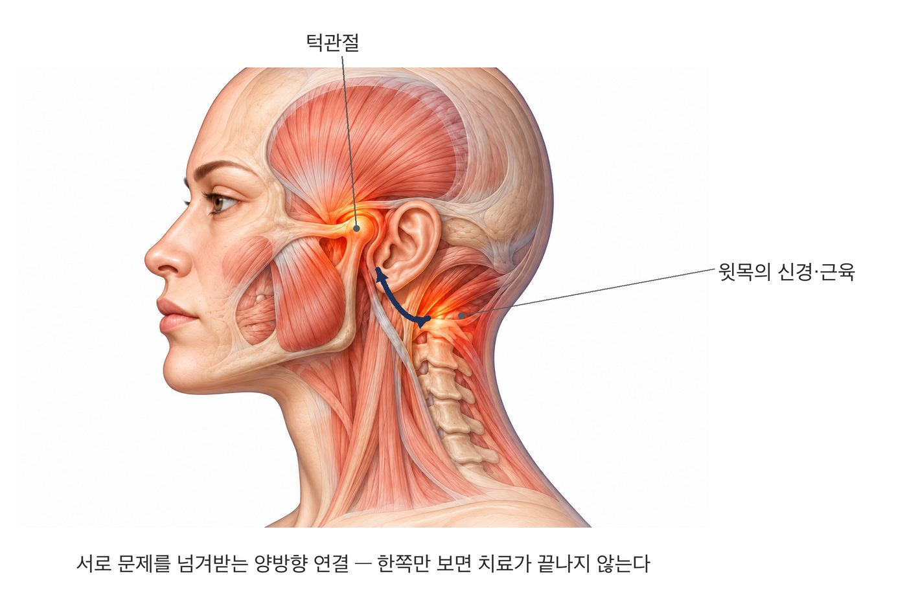

턱에서 온 신호와 윗목(1~3번 목뼈)에서 온 신호는 뇌줄기의 한자리에서 만납니다.
입을 벌릴 때는 목 근육이 먼저 긴장해 머리를 받칩니다. 턱과 목은 한 세트로 움직입니다.
그래서 턱의 긴장이 목·어깨로 이어지고, 반대로 목의 문제가 턱 증상에 영향을 주기도 합니다.
다만 목·어깨 결림은 자세·목디스크 같은 다른 원인이 더 흔합니다. 그쪽을 먼저 확인하는 것이 순서입니다.
얼굴의 감각과 씹는 근육은 삼차신경이 담당합니다. 이 신경의 신호가 모이는 곳은 뇌줄기에서 위쪽 목뼈 신경이 들어오는 자리와 이어져 있습니다. 턱에서 온 신호와 목에서 온 신호가 한곳에서 만나 서로 영향을 주고받는 것입니다.
움직임으로도 묶여 있습니다. 입을 벌릴 때는 턱만 움직이지 않습니다. 목 근육이 먼저 긴장해 머리를 받쳐 주고, 턱과 목이 한 세트로 움직입니다. 그래서 턱관절 주변이 오래 긴장하면 그 영향이 목빗근(귀 뒤에서 쇄골까지)과 승모근(어깨가 뭉친다고 할 때 그 자리)까지 이어질 수 있습니다.
이런 특징이 겹친다면, 목 치료만 반복하기보다 턱관절 상태를 함께 확인해 볼 필요가 있습니다.
목·어깨 결림은 자세, 목디스크, 근막통증 같은 원인이 더 흔합니다. 그쪽을 먼저 확인한 뒤에도 증상이 반복된다면 턱관절을 함께 살펴봅니다.
씹는 근육과 턱관절의 압통, 입 벌림, 이갈이·이 악물기 여부를 확인합니다. 이갈이가 확인되면 교합안정장치(스플린트)로 수면 중 부담을 줄이고, 물리치료와 함께 턱·목 이완 운동을 안내해 드립니다.
오래된 긴장일수록 풀리는 데에도 시간이 필요합니다. 몇 주에서 몇 달에 걸쳐 서서히 나아지므로 조급하게 보지 않으시는 편이 좋습니다.
목 치료를 받아도 결림이 반복된다면, 턱의 긴장을 함께 확인해 드립니다.
전화 상담 02-6745-2754이 페이지는 일반적인 건강정보이며 개인의 진단이나 치료를 대신하지 않습니다. 증상이 지속되거나 갑자기 악화되면 의료기관에서 진료를 받으시기 바랍니다.